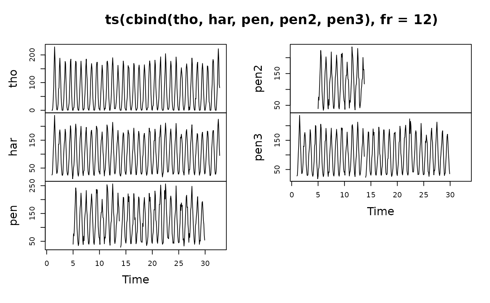
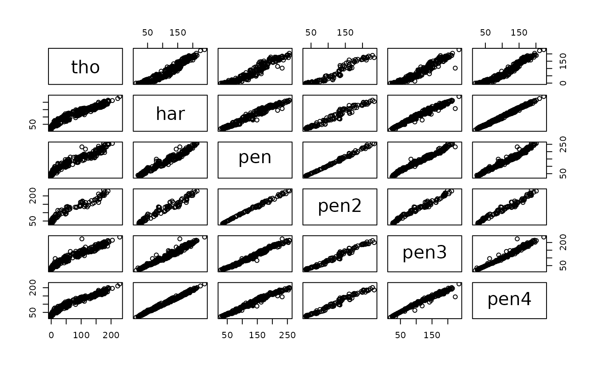
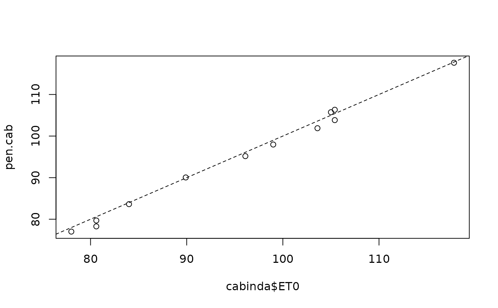
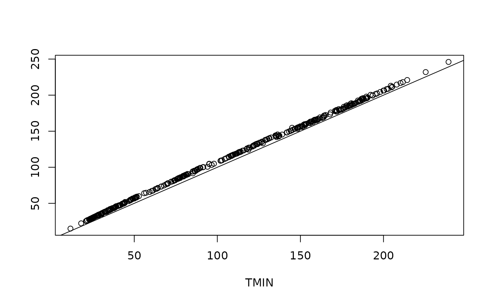
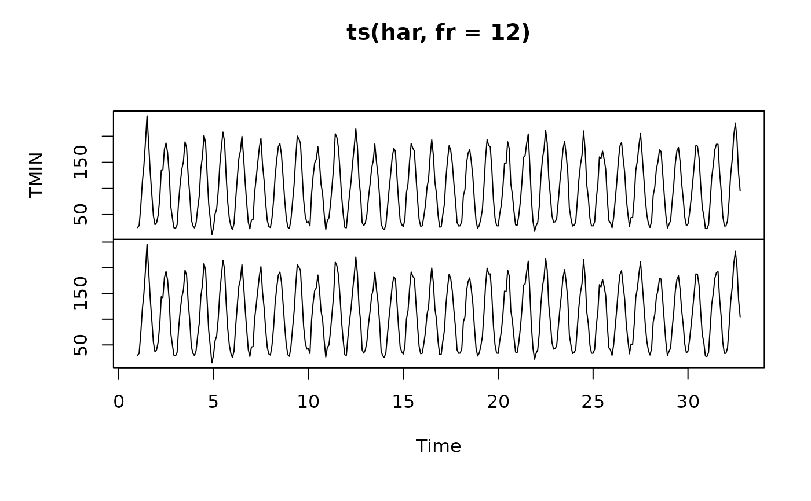
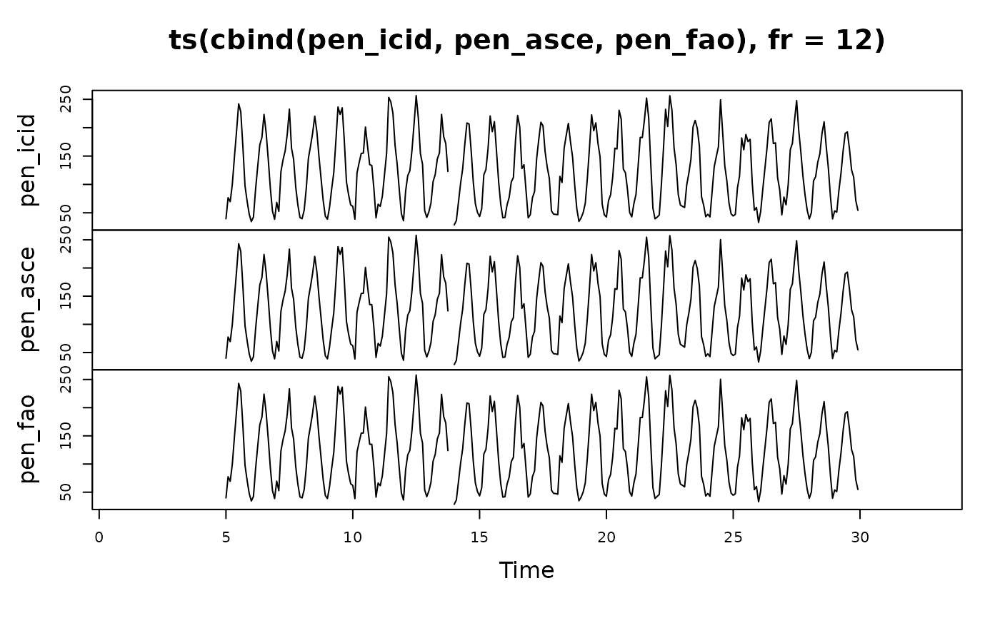
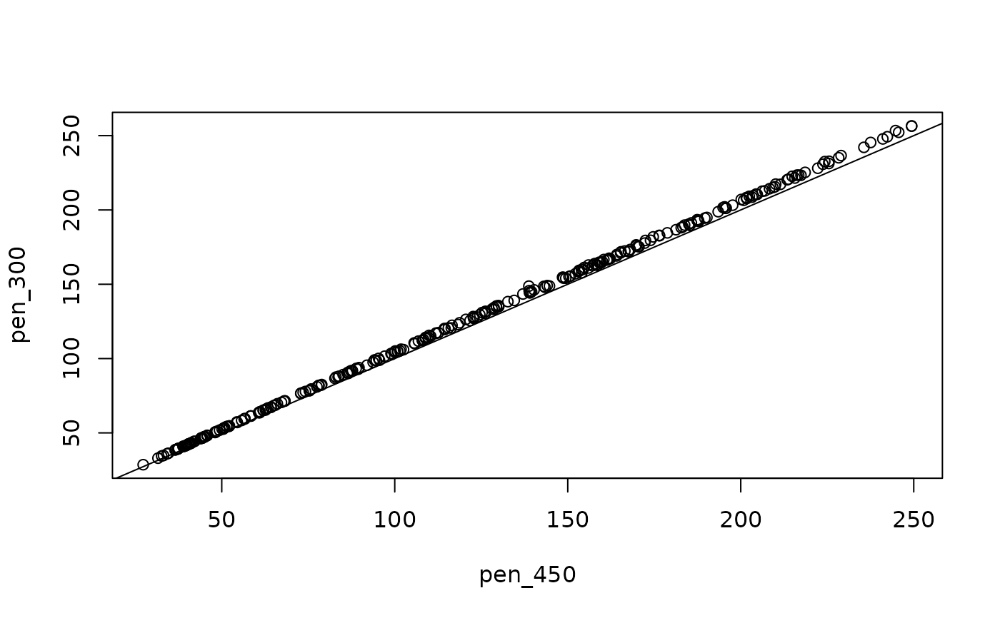
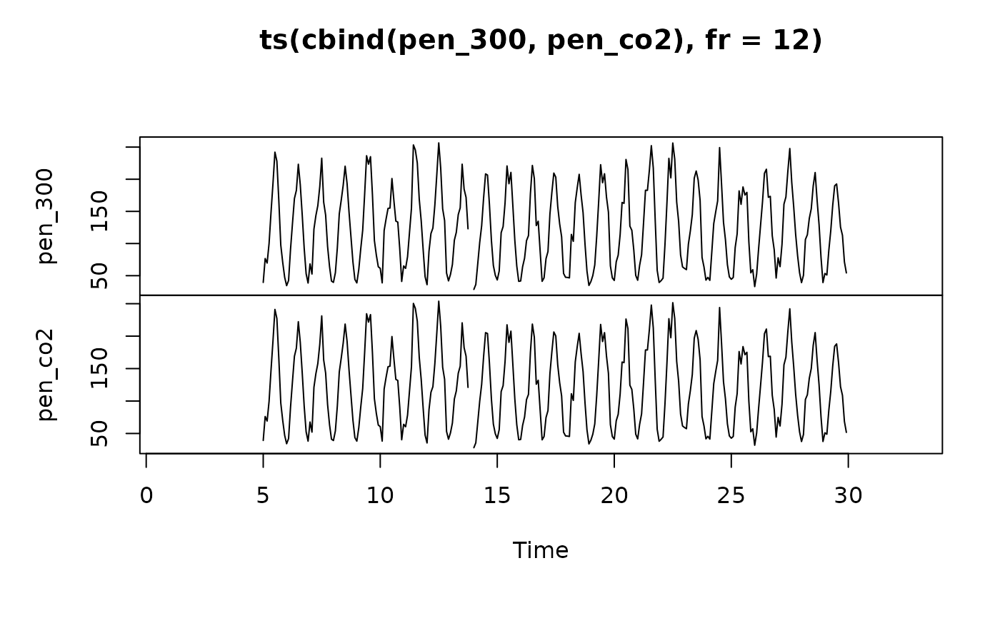

Computation of potential and reference evapotranspiration
Source:R/hargreaves.R, R/penman.R, R/thornthwaite.R
Potential-evapotranspiration.RdPotential evapotranspiration (PET) is the amount of evaporation and transpiration that would occur if a sufficient water source were available. Reference evapotranspiration (ETo) is the amount of evaporation and transpiration from a reference vegetation of grass. They are usually considered equivalent. This set of functions calculate PET or ETo according to the Thornthwaite, Hargreaves or Penman-Monteith equations.
See hargreaves
See hargreaves
Usage
thornthwaite(Tave, lat, na.rm = FALSE, verbose=TRUE, start = NULL)
hargreaves(Tmin, Tmax, Ra = NULL, lat = NULL, Pre = NULL, na.rm = FALSE,
verbose=TRUE, dates = NULL, start = NULL)
penman(Tmin, Tmax, U2 = NULL, Ra = NULL, lat = NULL, Rs = NULL, tsun = NULL,
CC = NULL, ed = NULL, Tdew = NULL, RH = NULL, P = NULL, P0 = NULL,
CO2 = NULL, z = NULL, crop='short', na.rm = FALSE, method='ICID',
verbose=TRUE, dates = NULL, kRs = NULL, aT = 0, start = NULL)
penman(
Tmin,
Tmax,
U2 = NULL,
Ra = NULL,
lat = NULL,
Rs = NULL,
tsun = NULL,
CC = NULL,
ed = NULL,
Tdew = NULL,
RH = NULL,
P = NULL,
P0 = NULL,
CO2 = NULL,
z = NULL,
crop = "short",
na.rm = FALSE,
method = "ICID",
verbose = TRUE,
dates = NULL,
kRs = NULL,
aT = 0,
start = NULL
)
thornthwaite(Tave, lat, na.rm = FALSE, verbose = TRUE, start = NULL)Arguments
- Tmin
a numeric vector, tsvector, matrix, tsmatrix, or 3-d array of monthly mean daily minimum temperatures, ºC.
- Tmax
a numeric vector, tsvector, matrix, tsmatrix, or 3-d array of monthly mean daily maximum temperatures, ºC.
- Ra
optional, a numeric vector, tsvector, matrix, tsmatrix, or 3-d array of monthly mean daily external radiation, MJ m-2 d-1.
- lat
a numeric vector or matrix with the latitude of the site or sites, in degrees.
- Pre
optional, a numeric vector, tsvector, matrix, tsmatrix, or 3-d array of monthly total precipitation, mm.
- na.rm
optional, a logical value indicating whether NA values should be stripped from the computations.
- verbose
optional, logical, report the computation options during calculation. Either 'TRUE' (default) or 'FALSE'. The report is issued as a message, so it can also be silenced with
suppressMessages().- dates
optional, a
Datevector (or a character vector that can be converted withas.Date()) with the date of each time step, i.e. one element per row (first dimension) of the input data. Only used byhargreavesandpenman. If provided, the computation is done at a daily time step: the inputs are daily values (instead of monthly means and totals) and the output is ETo in mm per day. The dates must not contain missing values and must be in strictly increasing order; gaps between dates are allowed. IfNULL(the default), the data are monthly. See Details.- start
optional, the month of the first observation of monthly data that are not a time series (a vector, matrix or 3-d array): a single year (i.e. starting in January), or a vector
c(year, month), as ints. It sets the calendar month of each time step (used for the month length and the mid-month day of the year). IfNULL(the default), the data are taken to start in January, all years being regular (non-leap) years. Can not be used if the main input is a time series, nor withdates. See Details.- U2
optional, a numeric vector, tsvector, matrix, tsmatrix, or 3-d array of monthly mean daily wind speeds at 2 m height, m s-1. No height conversion is applied, so wind speeds measured at other heights must be converted to 2 m by the user (e.g., FAO-56 eq. 47). If not provided, a constant value of 2 m s-1 is used. Values below 0.5 m s-1 are set to 0.5 m s-1 (Pereira et al., 2025, p. 105).
- Rs
optional, a numeric vector, tsvector, matrix, tsmatrix, or 3-d array of monthly mean daily incoming solar radiation, MJ m-2 d-1.
- tsun
optional, a numeric vector, tsvector, matrix, tsmatrix, or 3-d array of monthly mean daily bright sunshine hours, h.
- CC
optional, numeric a vector, matrix or time series of monthly mean cloud cover, %.
- ed
optional, a numeric vector, tsvector, matrix, tsmatrix, or 3-d array of monthly mean actual vapour pressure at 2 m height, kPa.
- Tdew
optional, a numeric vector, tsvector, matrix, tsmatrix, or 3-d array of monthly mean daily dewpoint temperature (used for estimating ed), ºC.
- RH
optional, a numeric vector, tsvector, matrix, tsmatrix, or 3-d array of monthly mean relative humidity (used for estimating ed), %.
- P
optional, a numeric vector, tsvector, matrix, tsmatrix, or 3-d array of monthly mean atmospheric pressure at the surface, kPa. If not provided, it is estimated from
P0andz, or fromzalone assuming a sea level pressure of 101.3 kPa (FAO-56 eq. 7).- P0
optional, a numeric vector, tsvector, matrix, tsmatrix, or 3-d array of monthly mean atmospheric pressure at sea level (used together with
zfor estimatingP), kPa.- CO2
optional, a single numeric value, a numeric vector, or a tsvector of monthly mean CO2 atmospheric concentration, ppm. If not provided, no CO2 correction is applied (equivalent to 300 ppm).
- z
a numeric vector or matrix of the elevation of the site or sites, m above sea level. Required by
penman, where it is used for the clear-sky solar radiation and, unlessPis given, for the atmospheric surface pressure.- crop
optional, character string, type of reference crop. Either one of 'short' (default) or 'tall'.
- method
optional, character string, Penman-Monteith calculation method. Either one of 'ICID' (default), 'FAO', or 'ASCE'.
- kRs
optional, a single numeric value, or one value per site (a vector, or a matrix for 3-d array input), with the radiation adjustment coefficient of the temperature-only method (Pereira et al., 2025, eq. 3.52), ºC^-0.5. Only used by
penmanwhen no radiation data (Rs,tsunorCC) are given; otherwise it is ignored with a warning. It must be between 0.1 and 0.35. IfNULL(the default), 0.16 is used. See Details.- aT
optional, a single numeric value, or one value per site (a vector, or a matrix for 3-d array input), with the difference between the minimum temperature and the dewpoint temperature, ºC (Pereira et al., 2025, eq. 2.6). Only used by
penmanwhen the actual vapour pressure is estimated fromTmin(noed,TdeworRHgiven); otherwise a non-zero value is ignored with a warning. It must be between -5 and 10. The default, 0, assumes that the dewpoint temperature equals the minimum temperature. See Details.- Tave
a numeric vector, tsvector, matrix, tsmatrix, or 3-d array of monthly mean temperatures, ºC.
Value
A vector, matrix or 3-d array with the values of monthly potential
or reference evapotranspiration, in mm. If the main input is a time series
(and dates is not given) the output is a time series with the same
time attributes. If start is given, a vector or matrix input gives
a monthly time series, and a 3-d array input gives an array whose time
dimnames are the months ("YYYY-MM").
If dates is given, the output has one value of daily reference
evapotranspiration per date, in mm per day. For vector or matrix input
(including time series) it is a zoo object with
index equal to dates; a matrix input gives a multi-column
zoo object that keeps the column names of Tmin. For 3-d
array input it is an array of the same dimensions whose first
dimnames are the dates in "YYYY-MM-DD" format, keeping the other
dimnames of Tmin.
A time series with the values of monthly potential or reference
evapotranspiration, in mm (or, if dates is given, a zoo
object or an array of daily reference evapotranspiration, in mm per day).
If the input is a matrix or a multivariate time series each column will be
treated as independent data (e.g., different observatories), and the output
will be a multivariate time series.
A time series with the values of monthly potential or reference evapotranspiration, in mm. If the input is a matrix or a multivariate time series each column will be treated as independent data (e.g., diferent observatories), and the output will be a multivariate time series.
Details
thornthwaite computes the monthly potential
evapotranspiration (PE) according to the Thornthwaite (1948) equation.
It is the simplest of the three methods, and can be used when only
mean temperature data are available.
The annual heat index is computed from the mean temperature of each
calendar month, so at least 12 monthly values are required.
Thornthwaite's original method uses a separate table for monthly mean
temperatures of 26.5 ºC or higher. This implementation applies the general
equation at all temperatures, which gives somewhat different values in
that range (about 2% at 27.3 ºC).
hargreaves computes the monthly reference evapotranspiration (ETo)
of a grass crop based on the original Hargreaves equation (Hargreaves and
Samani, 1985). However, if precipitation data Pre is provided a
modified form due to Droogers and Allen (2002) will be used; this equation
corrects ETo using the amount of rain of each month as a proxy for
irradiation. The Hargreaves method requires data on the mean external
radiation, Ra. If Ra is not available it can be estimated
from the latitude lat and the month of the year.
penman calculates the monthly reference evapotranspiration (ETo) of
a hypothetical reference crop according to the Penman-Monteith equation
(Monteith, 1965). This is widely considered the most accurate method for
estimating ETo, and is the method recommended by the UN Food and Agriculture
Organization (FAO). There are several methods which simplify the original
Penman-Monteith equation and are used in practice. Here we follow by default
the procedure described in Allen et al. (1994), aka the `ICID` method.
However, other versions are also implemented and can be used by setting the
method parameter to the appropriate value. The FAO-56 method
(Allen et al., 1998) can be used by setting method to `FAO`,
while the variation of the American Society of Civil Engineers (Walter et
al., 2002) is used when setting it to `ASCE`.
By default the original parameterization corresponding to a short reference
crop of 0.12 m height is used, although the parameterization for a tall
reference crop of 0.5 m height (Walter et al., 2002) can also be used,
by setting the crop parameter to 'tall'.
The method requires data on the incoming solar radiation, Rs;
since this is seldom available, the code will estimate it from data on the
bright sunshine duration tsun, or alternatively from data on the
percent cloud cover CC. If none of Rs, tsun or
CC is given (or they contain only missing values), Rs is
estimated from the temperature range (see below). Similarly, if data on
the actual vapour pressure ed are not available, it is possible to
estimate it from the dew point temperature Tdew, from the relative
humidity RH or even from the minimum temperature Tmin
(sorted from least to most uncertain method), as the saturation vapour
pressure at Tdew = Tmin - aT. Similarly, the atmospheric surface pressure P
required for computing the psychrometric constant can be calculated from the
atmospheric pressure at sea level P0 and the elevation z,
or else from the elevation z assuming a sea level pressure of
101.3 kPa (FAO-56 eq. 7). The elevation z is always required by
penman (there is no default value), since it is also used to
compute the clear-sky solar radiation, Rso = (0.75 + 2e-5 z) Ra. The
ratio Rs/Rso used in the net longwave radiation term is limited to 1.
Wind speed U2 must refer to 2 m height, as no height conversion is
applied. If no wind speed data U2 are available, a constant value
of 2 m s-1 is used. Wind speeds below 0.5 m s-1 are set to 0.5 m s-1,
with all three methods, following Pereira et al. (2025, p. 105): under
calm conditions the buoyancy of warm air still promotes the exchange of
vapour at the surface.
Custom CO2 atmospheric concentration CO2 can also be provided,
following Yang et al. (2019): the term 0.00024 (CO2 - 300) is added to the
wind coefficient of the denominator (0.34 for the short crop, 0.38 for the
tall crop). This correction was derived for the short reference crop, but
it is applied to whichever crop is selected, including 'tall'.
With monthly data, the soil heat flux G is computed from the difference
in mean temperature between the previous and the following months
(FAO-56 eq. 43), using forward or backward differences at the first and
last time steps. penman works with series of any length; with a
single time step G is set to 0. With daily data (dates), G is
always 0.
FAO-56 revision 1 and the temperature-only method. The revision
of FAO-56 (Pereira et al., 2025) keeps the FAO Penman-Monteith equation
and its components unchanged from Allen et al. (1998). It recommends the
Penman-Monteith temperature approach (PMT) over the Hargreaves-Samani
equation (hargreaves) when only maximum and minimum temperatures
are available, because the Penman-Monteith equation keeps the physical
relations between the weather variables. In PMT the missing variables are
estimated as follows, and penman does so when only Tmin and
Tmax are given:
Solar radiation: Rs = kRs sqrt(Tmax - Tmin) Ra (Pereira et al., 2025, eq. 3.52), limited to Rso. The coefficient
kRswas originally 0.16 for interior locations and 0.19 for coastal locations (Hargreaves and Samani, as cited by Pereira et al., 2025). Pereira et al. (2025, eqs. 3.53 and 3.54) also give regressions of kRs on the long-term means of Tmax - Tmin, wind speed and relative humidity, for all climates or by aridity class; these are not implemented, but their result can be passed askRs. The default is 0.16.Humidity: Tdew = Tmin - aT (Pereira et al., 2025, eqs. 2.6 and 2.7), with aT depending on the aridity of the region (UNEP aridity index, AI): 4-6 ºC in hyper-arid regions (AI < 0.05), 2-3 ºC in arid regions (0.05-0.20), 1-2 ºC in semiarid regions (0.20-0.50), 0-1 ºC in dry sub-humid regions (0.50-0.65) and 0 ºC in moist sub-humid and humid regions (AI >= 0.65). The value 6 ºC is only for very arid sites. The revision also allows aT calibrated for each calendar month with regional data, which can be negative in winter.
aTtakes a single value or one value per site; monthly values can be applied by passingTdew = Tmin - aTinstead.Wind speed: the regional mean, or 2 m s-1 if it is not known (the default of
U2).
The cloud cover route (CC) and the CO2 correction (CO2)
are not FAO procedures. The tall reference crop (crop = 'tall')
follows ASCE-EWRI (Walter et al., 2002; ASCE-EWRI, 2005).
The function will produce an error message if a valid combination of input
parameters is not provided.
If verbose is `TRUE` (the default value), a message will be produced
informing on the computation options selected.
The function accepts data in a variety of formats, including 1-D vectors, 2-D matrices and 3-D arrays. The input data format will determine the output format. Vector input can be used for single-station data. Matrix input can be used to produce output for a number of locations, where each column in the matrix will be considered as one location. 3-D arrays can be used to process gridded data, with the first dimension being time and the two other dimensions representing spatial coordinates. See the examples below for a guidance on how to use these options.
If the main input object (Tave, Tmin, Tmax) is a time
series then the function cycle will be used to determine the
position of each observation within the
year (month), allowing the data to start in a month different than January.
For a vector, matrix or 3-d array, the first month can be given with the
argument start: a vector or a matrix is then converted to a
monthly time series (ts(x, start = start, frequency = 12)), and
the result is a time series; a 3-d array keeps its shape, and the time
(first) dimnames of the result are the months, as "YYYY-MM"
(the format used by spei). As with time series, the actual
length of each month (including leap years) is used. If no time
information is provided, then the input data will be treated as a
sequence of monthly values starting in January, all years being regular
(non-leap) years.
Daily data. By default all three functions work with monthly
data. hargreaves and penman can also compute daily ETo by
passing the date of each time step in the argument dates
(thornthwaite is a monthly method and has no daily version). In
that case all the inputs are daily values (e.g., daily maximum and
minimum temperature, daily mean wind speed, daily sunshine hours or
daily solar radiation) and the output is ETo in mm per day, following
Allen et al. (1998). The day of the year used for the extraterrestrial
radiation is that of each date (FAO-56 eq. 21-25), instead of the
mid-month day used for monthly data, and the result is not multiplied by
the number of days in the month. In penman the soil heat flux G is
set to zero, as recommended for daily time steps (FAO-56 eq. 42), so
the ETo of each day only depends on the inputs of that day. The
precipitation-modified Hargreaves equation (Droogers and Allen, 2002)
was calibrated with monthly precipitation, so Pre can not be used
together with dates. With daily data the result carries the
dates: vector and matrix input give a zoo object
indexed by dates, and 3-d array input gives an array with the
dates as names of the time dimension. If the main input is a time series
(ts) and dates is given, the time attributes of the series
are ignored and the dates are taken from dates. A zoo
result can be aggregated to other time steps with
aggregate.zoo, e.g. to monthly totals with
aggregate(x, zoo::as.yearmon, sum).
See hargreaves
See hargreaves
References
Thornthwaite, C. W., 1948. An approach toward a rational classification of climate. Geographical Review 38: 55–94. DOI:10.2307/2107309.
Hargreaves G.H., Samani Z.A., 1985. Reference crop evapotranspiration from temperature. Applied Engineering in Agriculture 1(2): 96–99.
Droogers P., Allen R. G., 2002. Estimating reference evapotranspiration under inaccurate data conditions. Irrigation and Drainage Systems 16: 33–45.
Monteith, J. L., 1965. Evaporation and environment. Symposia of the Society for Experimental Biology 19: 205–234.
Allen R. G., Smith M., Pereira L. S., Perrier A., 1994. An update for the calculation of reference evapotranspiration. ICID Bulletin of the International Commission on Irrigation and Drainage, 35–92.
Allen R.G., Pereira L.S., Raes D., Smith, M., 1998. Crop evapotranspiration - Guidelines for computing crop water requirements - FAO Irrigation and drainage paper 56. FAO, Rome. ISBN 92-5-104219-5.
Pereira L.S., Allen R.G., Paredes P., López-Urrea R., Raes D., Smith M., Kilic A., Salman M., 2025. Crop evapotranspiration - Guidelines for computing crop water requirements - FAO Irrigation and Drainage Paper 56 Rev. 1. FAO, Rome. DOI:10.4060/cd6621en.
ASCE-EWRI, 2005. The ASCE standardized reference evapotranspiration equation. Report of the Task Committee on Standardization of Reference Evapotranspiration, R.G. Allen et al. (eds.), American Society of Civil Engineers, Reston, VA.
Walter I.A. and 14 co-authors, 2002. The ASCE standardized reference evapotranspiration equation. Rep. Task Com. on Standardized Reference Evapotranspiration July 9, 2002, EWRI–Am. Soc. Civil Engr., Reston, VA, 57 pp.
Yang, Y., Roderick, M.L., Zhang, S. McVicar, T., Donohue, R.J., 2019. Hydrologic implications of vegetation response to elevated CO2 in climate projections. Nature Climate Change 9: 44–48.
Examples
# Load data for Wichita (Kansas), lat=37.6475N, elevation=402.6 m. a.s.l.
# Data consists on monthly values since January 1980
data(wichita)
attach(wichita)
names(wichita)
#> [1] "YEAR" "MONTH" "PRCP" "TMAX" "TMIN" "TMED" "AWND" "TSUN" "ACSH"
# PET following Thornthwaite
tho <- thornthwaite(TMED, 37.6475)
#> Checking for missing values (`NA`): all the data must be complete. Input type is vector. Assuming the data are monthly time series starting in January, all regular (non-leap) years.
# ETo by Hargreaves
har <- hargreaves(TMIN, TMAX, lat = 37.6475)
#> Calculating reference evapotranspiration using the Hargreaves method. Using latitude (`lat`) to estimate extraterrestrial radiation. Checking for missing values (`NA`): all the data must be complete. Input type is vector. Assuming the data are monthly time series starting in January, all regular (non-leap) years.
# ETo by Penman, based on sun hours, ignore NAs
pen <- penman(TMIN, TMAX, AWND, tsun = TSUN, lat = 37.6475, z = 402.6, na.rm = TRUE)
#> Using user-provided wind speed at 2 m height (`U2`) data. Using latitude (`lat`) to estimate extraterrestrial radiation. Using bright sunshine duration data (`tsun`) to estimate incoming solar radiation. Using minimum temperature (`Tmin`) to estimate dewpoint temperature and actual vapour pressure (Tdew = Tmin - aT, with `aT` = 0). Assuming constant atmospheric surface pressure corresponding to elevation `z`. Computing for a short crop. Missing values (`NA`) will not be considered in the calculation. Input type is vector. Assuming the data are monthly time series starting in January, all regular (non-leap) years. Calculation method is ICID.
# Penman, based on cloud cover
pen2 <- penman(TMIN, TMAX, AWND, CC = ACSH, lat = 37.6475, z = 402.6, na.rm = TRUE)
#> Using user-provided wind speed at 2 m height (`U2`) data. Using latitude (`lat`) to estimate extraterrestrial radiation. Using fraction cloud cover (`CC`) to estimate incoming solar radiation. Using minimum temperature (`Tmin`) to estimate dewpoint temperature and actual vapour pressure (Tdew = Tmin - aT, with `aT` = 0). Assuming constant atmospheric surface pressure corresponding to elevation `z`. Computing for a short crop. Missing values (`NA`) will not be considered in the calculation. Input type is vector. Assuming the data are monthly time series starting in January, all regular (non-leap) years. Calculation method is ICID.
# Penman, with constant wind
pen3 <- penman(TMIN, TMAX, tsun = TSUN, lat = 37.6475, z = 402.6, na.rm = TRUE)
#> No wind data (`U2`) provided, so using a constant value of 2 m s-1. Using latitude (`lat`) to estimate extraterrestrial radiation. Using bright sunshine duration data (`tsun`) to estimate incoming solar radiation. Using minimum temperature (`Tmin`) to estimate dewpoint temperature and actual vapour pressure (Tdew = Tmin - aT, with `aT` = 0). Assuming constant atmospheric surface pressure corresponding to elevation `z`. Computing for a short crop. Missing values (`NA`) will not be considered in the calculation. Input type is vector. Assuming the data are monthly time series starting in January, all regular (non-leap) years. Calculation method is ICID.
# Penman with temperature only (PMT): Rs from the temperature range,
# constant wind, ed from Tmin with aT = 1 (e.g., a dry sub-humid region)
pen4 <- penman(TMIN, TMAX, lat = 37.6475, z = 402.6, kRs = 0.16, aT = 1,
na.rm = TRUE)
#> No wind data (`U2`) provided, so using a constant value of 2 m s-1. Using latitude (`lat`) to estimate extraterrestrial radiation. No radiation data (`Rs`, `tsun` or `CC`) provided, so estimating incoming solar radiation from the temperature range with `kRs` = 0.16 (FAO-56 Rev.1 eq. 3.52). Using minimum temperature (`Tmin`) to estimate dewpoint temperature and actual vapour pressure (Tdew = Tmin - aT, with `aT` = 1). Assuming constant atmospheric surface pressure corresponding to elevation `z`. Computing for a short crop. Missing values (`NA`) will not be considered in the calculation. Input type is vector. Assuming the data are monthly time series starting in January, all regular (non-leap) years. Calculation method is ICID.
# Plot them together
plot(ts(cbind(tho, har, pen, pen2, pen3, pen4), fr = 12))

# Compare between methods
pairs(cbind(tho, har, pen, pen2, pen3, pen4))

# Input data as a time series vector; note that only the first parameter
# needs to be a `ts` object.
thornthwaite(ts(TMED, start = c(1980, 1), frequency = 12), 37.6475)
#> Checking for missing values (`NA`): all the data must be complete. Input type is tsvector. Time series spanning Jan 1980 to Oct 2011.
#> Jan Feb Mar Apr May
#> 1980 0.000000e+00 0.000000e+00 1.087694e+01 4.432700e+01 8.490404e+01
#> 1981 8.213896e-01 6.848873e+00 2.366462e+01 7.683831e+01 8.096924e+01
#> 1982 0.000000e+00 0.000000e+00 1.977982e+01 4.186860e+01 9.282541e+01
#> 1983 0.000000e+00 1.873580e+00 1.426156e+01 2.631434e+01 7.248399e+01
#> 1984 0.000000e+00 8.988825e+00 9.550699e+00 3.689313e+01 8.574134e+01
#> 1985 0.000000e+00 0.000000e+00 2.720883e+01 6.275585e+01 1.032929e+02
#> 1986 4.530000e+00 4.122252e+00 3.466820e+01 5.880849e+01 9.900952e+01
#> 1987 0.000000e+00 9.958382e+00 2.218893e+01 5.423089e+01 1.123893e+02
#> 1988 0.000000e+00 8.765113e-01 1.598623e+01 4.310034e+01 1.062105e+02
#> 1989 4.953207e+00 0.000000e+00 2.214727e+01 6.168161e+01 9.582024e+01
#> 1990 6.278805e+00 5.161836e+00 2.185645e+01 4.424841e+01 8.571779e+01
#> 1991 0.000000e+00 1.364978e+01 2.879470e+01 5.930461e+01 1.155107e+02
#> 1992 5.523422e+00 1.492645e+01 2.944969e+01 5.200228e+01 8.429695e+01
#> 1993 0.000000e+00 1.274947e-02 1.390775e+01 3.884099e+01 8.480580e+01
#> 1994 0.000000e+00 7.016041e-01 3.013305e+01 4.565368e+01 9.748993e+01
#> 1995 2.409191e-01 7.655169e+00 1.867175e+01 3.825594e+01 7.155426e+01
#> 1996 0.000000e+00 4.535505e+00 9.305179e+00 4.716062e+01 1.120319e+02
#> 1997 0.000000e+00 3.807659e+00 2.315482e+01 3.445518e+01 8.231601e+01
#> 1998 1.057403e+00 8.364285e+00 9.333317e+00 4.430432e+01 1.134825e+02
#> 1999 1.475775e-01 1.502391e+01 1.690188e+01 4.955529e+01 9.251216e+01
#> 2000 6.588884e-01 1.003817e+01 2.579042e+01 4.698882e+01 1.091072e+02
#> 2001 3.100335e-02 4.747655e-01 1.331364e+01 6.390054e+01 1.025609e+02
#> 2002 2.360014e+00 3.924577e+00 1.178668e+01 5.696144e+01 8.579394e+01
#> 2003 2.126932e-02 3.695465e-01 1.894661e+01 5.665566e+01 8.971011e+01
#> 2004 8.249429e-03 6.226213e-01 3.047345e+01 5.259705e+01 1.116124e+02
#> 2005 0.000000e+00 7.880630e+00 2.095150e+01 5.279443e+01 1.020740e+02
#> 2006 1.169912e+01 2.541220e+00 2.698493e+01 7.439800e+01 1.041901e+02
#> 2007 0.000000e+00 8.774084e-01 4.286254e+01 4.083222e+01 1.055821e+02
#> 2008 1.183812e-01 1.373983e+00 1.889526e+01 4.315583e+01 9.641452e+01
#> 2009 1.832632e-02 1.028907e+01 2.400670e+01 4.667523e+01 9.423975e+01
#> 2010 0.000000e+00 5.759776e-02 2.252321e+01 6.653558e+01 9.455509e+01
#> 2011 0.000000e+00 1.455005e-01 2.447994e+01 5.868469e+01 9.756969e+01
#> Jun Jul Aug Sep Oct
#> 1980 1.649531e+02 2.287251e+02 1.851420e+02 1.173401e+02 5.158214e+01
#> 1981 1.541735e+02 1.882412e+02 1.482878e+02 1.042968e+02 4.331997e+01
#> 1982 1.167080e+02 1.763599e+02 1.681939e+02 1.040766e+02 4.949731e+01
#> 1983 1.216178e+02 1.772640e+02 1.846610e+02 1.073978e+02 5.100623e+01
#> 1984 1.531008e+02 1.770181e+02 1.720099e+02 9.743242e+01 5.001680e+01
#> 1985 1.343421e+02 1.774651e+02 1.450435e+02 9.568999e+01 4.773998e+01
#> 1986 1.583521e+02 1.848619e+02 1.374867e+02 1.108315e+02 4.827009e+01
#> 1987 1.465870e+02 1.687927e+02 1.511020e+02 9.790635e+01 4.296290e+01
#> 1988 1.580324e+02 1.729190e+02 1.730591e+02 1.040908e+02 4.547792e+01
#> 1989 1.242310e+02 1.628058e+02 1.428058e+02 7.982676e+01 5.788206e+01
#> 1990 1.747716e+02 1.776663e+02 1.618940e+02 1.140762e+02 5.057345e+01
#> 1991 1.613201e+02 1.897846e+02 1.602163e+02 9.469505e+01 5.390677e+01
#> 1992 1.207119e+02 1.621907e+02 1.268976e+02 1.001634e+02 5.278118e+01
#> 1993 1.365974e+02 1.778676e+02 1.632032e+02 8.618482e+01 4.164596e+01
#> 1994 1.614162e+02 1.554563e+02 1.527449e+02 9.812180e+01 5.725952e+01
#> 1995 1.258964e+02 1.690891e+02 1.626417e+02 9.061324e+01 5.297012e+01
#> 1996 1.505625e+02 1.631646e+02 1.444746e+02 8.698945e+01 5.060850e+01
#> 1997 1.336233e+02 1.644664e+02 1.412025e+02 1.068787e+02 5.297012e+01
#> 1998 1.566378e+02 1.783711e+02 1.662100e+02 1.323156e+02 5.816584e+01
#> 1999 1.295172e+02 1.809979e+02 1.642346e+02 8.495377e+01 5.330003e+01
#> 2000 1.299232e+02 1.697438e+02 1.925317e+02 1.139932e+02 6.052551e+01
#> 2001 1.408737e+02 2.043004e+02 1.721870e+02 9.633157e+01 5.286032e+01
#> 2002 1.469584e+02 1.772640e+02 1.593798e+02 1.115830e+02 3.368642e+01
#> 2003 1.271286e+02 1.924704e+02 1.699961e+02 8.123193e+01 5.014199e+01
#> 2004 1.324206e+02 1.536158e+02 1.344048e+02 1.139176e+02 5.818492e+01
#> 2005 1.521934e+02 1.679045e+02 1.512843e+02 1.147596e+02 5.551817e+01
#> 2006 1.472371e+02 1.886523e+02 1.667760e+02 8.825069e+01 4.917610e+01
#> 2007 1.335336e+02 1.660349e+02 1.736213e+02 1.127139e+02 5.993635e+01
#> 2008 1.483190e+02 1.691508e+02 1.464479e+02 8.795245e+01 4.836280e+01
#> 2009 1.601689e+02 1.589224e+02 1.392517e+02 9.047365e+01 3.097406e+01
#> 2010 1.693641e+02 1.833331e+02 1.763101e+02 1.137730e+02 6.294891e+01
#> 2011 1.734879e+02 2.222437e+02 1.840739e+02 9.377454e+01 8.146792e+01
#> Nov Dec
#> 1980 1.809013e+01 3.095608e+00
#> 1981 1.820962e+01 2.004860e-01
#> 1982 1.122531e+01 2.380747e+00
#> 1983 1.554254e+01 0.000000e+00
#> 1984 1.549887e+01 3.367477e+00
#> 1985 5.980191e+00 0.000000e+00
#> 1986 6.707009e+00 2.063938e+00
#> 1987 1.963455e+01 1.346308e+00
#> 1988 1.908986e+01 4.845555e+00
#> 1989 1.547783e+01 0.000000e+00
#> 1990 2.512952e+01 0.000000e+00
#> 1991 6.211364e+00 5.602510e+00
#> 1992 8.535751e+00 4.245914e-01
#> 1993 7.890369e+00 4.035458e+00
#> 1994 1.773196e+01 3.314301e+00
#> 1995 1.266816e+01 4.693021e-01
#> 1996 7.868198e+00 7.459124e-01
#> 1997 9.791462e+00 1.178313e+00
#> 1998 2.323144e+01 2.188706e+00
#> 1999 3.159662e+01 3.937671e+00
#> 2000 7.000920e+00 0.000000e+00
#> 2001 2.617664e+01 5.448535e+00
#> 2002 1.324437e+01 1.911722e+00
#> 2003 1.612933e+01 3.424751e+00
#> 2004 1.850146e+01 4.013584e+00
#> 2005 1.995249e+01 1.497839e-01
#> 2006 2.055803e+01 5.492370e+00
#> 2007 1.659111e+01 0.000000e+00
#> 2008 1.667692e+01 2.858578e-01
#> 2009 2.497571e+01 0.000000e+00
#> 2010 1.725890e+01 8.673114e-01
#> 2011
hargreaves(ts(TMIN, start = c(1980, 1), frequency = 12), TMAX, lat = 37.6475)
#> Calculating reference evapotranspiration using the Hargreaves method. Using latitude (`lat`) to estimate extraterrestrial radiation. Checking for missing values (`NA`): all the data must be complete. Input type is tsvector. Time series spanning Jan 1980 to Oct 2011.
#> Jan Feb Mar Apr May Jun Jul
#> 1980 25.13187 29.78296 64.67253 111.69846 143.51533 189.99272 238.68833
#> 1981 34.08361 47.88739 79.94634 135.53762 135.61769 175.76027 187.15729
#> 1982 23.65390 30.06515 75.96681 110.41271 137.12669 151.50240 189.28639
#> 1983 24.57369 33.30313 61.25894 85.29397 137.35450 160.64284 201.86972
#> 1984 24.76047 52.66697 61.08160 94.61020 144.51143 179.44780 207.57319
#> 1985 20.97593 32.38024 77.69862 117.63511 156.77146 171.64034 199.93331
#> 1986 39.16779 40.31994 91.38722 119.54660 150.02597 178.53266 196.19336
#> 1987 25.24653 43.20336 76.52292 124.26231 155.19593 180.06745 185.75254
#> 1988 23.22287 42.56096 74.83485 109.07368 159.34952 200.41126 194.82067
#> 1989 36.98006 28.14903 88.63152 124.08679 149.25988 155.91919 179.85526
#> 1990 38.63635 43.20301 70.20044 105.40475 141.72991 204.87845 198.02604
#> 1991 24.67274 56.54328 87.50745 114.15763 150.11143 180.44783 214.27468
#> 1992 34.21537 51.79922 83.26421 109.02928 139.35879 152.81418 184.90211
#> 1993 21.25296 30.19295 63.44688 96.61893 127.41899 159.75363 176.83605
#> 1994 27.13766 39.66582 91.53966 109.26528 153.05433 186.24769 177.48292
#> 1995 28.59144 46.12637 67.81624 101.91265 118.77812 163.53628 193.40740
#> 1996 26.48935 51.94068 70.84660 122.07958 155.46214 182.09078 172.94256
#> 1997 28.61964 37.43115 86.36033 97.96607 148.69222 167.82143 174.68617
#> 1998 28.72407 41.30957 59.26145 104.41265 158.34758 193.43956 182.06890
#> 1999 28.20651 50.89819 69.05468 102.82077 148.06969 148.39170 189.54667
#> 2000 29.57243 49.13370 75.15811 112.11230 159.99381 163.01039 185.84827
#> 2001 28.74795 34.54041 66.16539 122.21654 157.08216 175.84077 211.65267
#> 2002 36.08866 42.28414 76.26859 111.88552 141.96830 175.59853 190.42668
#> 2003 29.68330 35.00366 74.69031 115.86817 145.17301 164.01698 210.23241
#> 2004 28.39854 37.41347 80.17479 107.63425 160.87159 157.65494 171.18253
#> 2005 24.90099 43.83254 77.70714 113.33610 153.62634 181.48237 188.20948
#> 2006 44.47001 43.78980 81.58177 135.05947 153.03307 183.07702 205.27869
#> 2007 25.38483 37.30110 86.71987 102.17365 136.77909 151.02422 173.95671
#> 2008 31.35342 39.72576 75.00698 107.62442 148.80584 172.08764 178.34340
#> 2009 32.00610 52.27083 80.48546 112.46211 146.86893 182.60487 181.09471
#> 2010 22.95626 30.21640 73.41031 121.12920 144.31833 174.78445 184.73882
#> 2011 28.14557 37.70072 77.42332 126.67147 156.49126 202.80625 225.38519
#> Aug Sep Oct Nov Dec
#> 1980 186.74407 131.41707 88.61395 47.71669 30.64474
#> 1981 168.24287 128.74979 66.23618 43.90132 24.92862
#> 1982 177.57953 125.55435 88.43744 40.61560 28.42243
#> 1983 187.83286 126.90379 69.78633 40.64147 11.61445
#> 1984 188.86347 123.20246 73.35872 43.11973 28.03869
#> 1985 161.76884 113.54092 72.16989 35.00589 22.80021
#> 1986 146.46812 115.12430 72.35099 39.17274 27.22216
#> 1987 164.37305 122.16118 79.43944 44.04990 25.99624
#> 1988 185.87037 130.37441 76.99505 47.27724 35.28613
#> 1989 149.92673 108.08928 89.80037 50.49553 21.73700
#> 1990 178.02741 134.95498 86.11309 51.31943 25.67213
#> 1991 180.69622 117.91834 87.63027 34.69408 28.73498
#> 1992 151.79550 124.24438 84.30296 32.46130 24.14814
#> 1993 171.42830 122.94591 76.78321 40.24327 30.75235
#> 1994 171.71836 123.91558 79.40135 41.33797 27.62921
#> 1995 164.12120 112.83502 89.73398 48.90480 26.06920
#> 1996 147.38018 108.85530 75.70529 34.56928 28.15113
#> 1997 151.96625 121.57073 75.58235 38.03549 23.85564
#> 1998 180.25094 136.37913 79.09129 43.71729 28.80268
#> 1999 176.12525 108.74556 87.85504 55.96150 30.32033
#> 2000 203.48251 143.89179 78.30189 36.85349 18.02613
#> 2001 187.23586 118.94109 85.29635 48.18601 35.39959
#> 2002 164.26252 130.03433 62.74787 42.74012 27.99158
#> 2003 173.09717 106.85503 82.02522 43.01951 28.61258
#> 2004 155.22941 135.17687 78.80946 38.20660 33.92607
#> 2005 158.14141 130.18029 81.15394 51.54441 27.32981
#> 2006 165.20039 123.58342 80.89846 49.38160 32.65247
#> 2007 170.65763 129.16720 87.84757 48.95712 24.39854
#> 2008 151.30732 108.74055 79.39644 44.00005 28.78158
#> 2009 158.58297 108.35273 64.21377 47.65761 23.61784
#> 2010 184.60006 131.05289 95.08326 47.53284 28.18096
#> 2011 192.29119 128.83514 95.08483
penman(ts(TMIN, start = c(1980, 1), frequency = 12), TMAX, AWND,
tsun = TSUN,
lat = 37.6475, z = 402.6, na.rm = TRUE
)
#> Using user-provided wind speed at 2 m height (`U2`) data. Using latitude (`lat`) to estimate extraterrestrial radiation. Using bright sunshine duration data (`tsun`) to estimate incoming solar radiation. Using minimum temperature (`Tmin`) to estimate dewpoint temperature and actual vapour pressure (Tdew = Tmin - aT, with `aT` = 0). Assuming constant atmospheric surface pressure corresponding to elevation `z`. Computing for a short crop. Missing values (`NA`) will not be considered in the calculation. Input type is tsvector. Time series spanning Jan 1980 to Oct 2011. Calculation method is ICID.
#> Jan Feb Mar Apr May Jun Jul
#> 1980 NA NA NA NA NA NA NA
#> 1981 NA NA NA NA NA NA NA
#> 1982 NA NA NA NA NA NA NA
#> 1983 NA NA NA NA NA NA NA
#> 1984 39.48446 79.45491 69.87311 100.36578 148.75572 193.47055 241.93624
#> 1985 34.46876 42.37075 91.07630 131.18804 170.01434 182.72403 223.32895
#> 1986 68.39302 52.30701 122.37450 143.45875 159.03823 188.65180 232.74027
#> 1987 39.58776 54.39182 93.34457 146.23369 167.50575 190.46910 220.30578
#> 1988 38.71558 61.81462 92.12856 120.93506 176.69744 236.59527 223.26311
#> 1989 61.37982 38.60513 120.20921 138.30554 154.67657 155.15434 201.12555
#> 1990 65.22117 61.08822 79.50944 117.15875 154.70377 253.38978 245.39833
#> 1991 35.94297 87.77969 115.59394 124.06783 159.86899 207.05817 256.54334
#> 1992 51.82051 69.76933 105.51331 117.73210 145.14115 155.51925 223.24692
#> 1993 28.60492 36.12089 68.69473 101.61436 127.64333 171.09482 208.30113
#> 1994 43.31105 57.13776 116.92280 126.35805 163.18431 220.68826 192.97707
#> 1995 41.75662 63.69092 77.19093 104.48034 112.24591 177.70137 221.47234
#> 1996 46.65978 79.18789 87.78793 145.98031 179.68068 209.62597 203.01394
#> 1997 47.28295 46.27734 114.22431 103.39894 163.73599 186.70163 207.65559
#> 1998 40.76389 50.03021 66.78572 111.75190 165.22254 222.63101 194.49525
#> 1999 42.56803 71.26036 81.88989 113.79902 163.84053 162.49403 230.76233
#> 2000 42.84380 68.51989 82.83061 132.18188 183.13881 182.71430 214.08677
#> 2001 42.25222 45.90676 98.73034 162.92647 232.52540 202.07338 256.36987
#> 2002 61.31106 59.13615 99.05954 119.58735 144.86824 201.63627 212.83983
#> 2003 47.39379 42.51748 86.66943 130.92741 149.10912 166.29031 249.23879
#> 2004 44.37602 48.91935 94.28042 115.41021 182.07911 160.94818 187.90649
#> 2005 32.99603 52.26936 91.76834 128.27007 164.78662 209.16009 215.60751
#> 2006 77.85333 63.74000 98.87514 161.27640 172.37896 212.59565 247.79951
#> 2007 39.18009 50.33236 106.29602 113.66217 139.11803 154.05543 189.63159
#> 2008 53.43547 52.89850 89.56371 120.36396 159.53485 189.81725 192.47383
#> 2009 NA NA NA NA NA NA NA
#> 2010 NA NA NA NA NA NA NA
#> 2011 NA NA NA NA NA NA NA
#> Aug Sep Oct Nov Dec
#> 1980 NA NA NA NA NA
#> 1981 NA NA NA NA NA
#> 1982 NA NA NA NA NA
#> 1983 NA NA NA NA NA
#> 1984 227.58333 166.12188 97.20556 70.30915 47.39869
#> 1985 191.27141 144.33348 92.88109 53.01924 38.49369
#> 1986 164.29411 144.21575 95.51529 64.18985 41.60798
#> 1987 193.14687 148.82452 110.00735 71.32771 44.17288
#> 1988 234.65415 175.41569 104.26092 81.70471 63.81673
#> 1989 166.72592 134.92115 133.33249 91.87102 40.99125
#> 1990 225.27846 169.06991 135.38670 90.61523 48.36542
#> 1991 217.23709 154.09878 135.66581 54.18774 41.85934
#> 1992 184.15742 171.27035 122.34499 NA NA
#> 1993 206.49903 160.02564 104.84699 65.85139 50.62628
#> 1994 210.65986 158.49856 105.20136 65.13436 41.15179
#> 1995 201.16532 127.90451 134.71856 87.67392 41.15294
#> 1996 157.33628 129.91012 110.11542 53.33873 47.49744
#> 1997 175.24117 147.95124 98.91340 57.01548 34.79406
#> 1998 208.61125 172.36978 148.74257 65.37791 46.54659
#> 1999 215.04453 127.03706 120.59507 90.01871 50.40527
#> 2000 251.76458 216.76433 134.53140 58.15490 39.35566
#> 2001 231.23887 164.51562 134.27683 82.11341 63.62342
#> 2002 198.82415 167.16404 78.34381 63.55810 43.06728
#> 2003 192.31908 133.15326 106.00467 67.22594 48.20478
#> 2004 175.03742 178.93905 102.44956 54.20692 59.33376
#> 2005 171.88474 173.39112 112.08426 90.31997 46.29588
#> 2006 194.94056 157.07038 114.13399 80.99272 54.68425
#> 2007 210.45366 167.04004 129.50855 78.50912 39.19165
#> 2008 162.35959 125.05487 112.29715 71.20653 54.24668
#> 2009 NA NA NA NA NA
#> 2010 NA NA NA NA NA
#> 2011 NA NA NA
# Input data as a time series. Consider the data started in June 1980
thornthwaite(ts(TMED, start = c(1980, 6), frequency = 12), 37.6475)
#> Checking for missing values (`NA`): all the data must be complete. Input type is tsvector. Time series spanning Jun 1980 to Mar 2012.
#> Jan Feb Mar Apr May
#> 1980
#> 1981 133.02127070 94.52996336 54.86312523 23.63102351 4.61117207
#> 1982 106.25571740 83.73827567 45.91107370 23.72027447 0.29847391
#> 1983 120.51947866 83.56144459 52.45789894 14.62234589 3.54434172
#> 1984 132.31902012 89.61588085 54.24835681 20.30768139 0.00000000
#> 1985 123.58607943 78.49223147 53.19822231 20.24607811 5.01614487
#> 1986 103.93107070 76.82799752 50.59545911 7.78993492 0.00000000
#> 1987 98.51622184 88.98484685 51.15727354 8.73670514 3.07269149
#> 1988 108.27228995 81.69594952 45.69376027 25.65424179 2.00843586
#> 1989 124.33990491 83.85623781 48.37064204 24.93696046 7.21786752
#> 1990 102.32765195 64.09165803 61.34417086 20.16177967 0.00000000
#> 1991 116.00529195 91.59002603 53.59840300 32.73429994 0.00000000
#> 1992 114.80312737 79.01634862 57.33326481 8.11568505 8.35788241
#> 1993 91.17371055 80.69231801 56.13843221 11.15019740 0.63246515
#> 1994 116.94342203 69.19644414 44.13693727 10.27817774 6.00779510
#> 1995 109.44945490 78.78046438 60.68439410 23.09806733 4.93417091
#> 1996 116.54103319 75.61036458 56.33708105 16.55205188 0.70010974
#> 1997 103.80246711 70.07930241 53.82756210 10.27817774 1.11110010
#> 1998 101.17875784 85.81122525 56.13843221 12.75458421 1.75421512
#> 1999 119.09791334 106.23412404 61.64491770 30.26180864 3.25843940
#> 2000 117.68243082 70.88793406 56.68795733 41.28371889 5.87425796
#> 2001 138.33064035 91.83374200 64.37536620 9.14525777 0.00000000
#> 2002 123.38077722 77.34310929 56.02205962 34.09829199 8.11151552
#> 2003 114.20373744 89.58828557 35.70130790 17.25241697 2.84608001
#> 2004 121.81088139 67.78232213 53.32918459 21.07437045 5.10907899
#> 2005 96.56746439 91.77279115 61.88589621 24.16834275 5.97857612
#> 2006 108.40285966 92.13871472 58.83888935 25.99057052 0.22299099
#> 2007 119.50345506 70.85510365 52.11747262 26.77936675 8.17677527
#> 2008 124.40851631 94.05176872 63.74610512 21.67772497 0.00000000
#> 2009 105.22025577 70.85510365 51.43901750 21.78495021 0.42580952
#> 2010 99.78090788 72.63987781 32.82672025 32.53393619 0.00000000
#> 2011 126.33515982 91.34654331 66.71407768 22.48183688 1.29121142
#> 2012 131.89831249 78.24824607 86.64629507
#> Jun Jul Aug Sep Oct
#> 1980 0.00000000 0.00000000 12.46801365 41.65761562 66.43162298
#> 1981 1.20058760 10.33929641 27.29564559 72.67641479 63.71032762
#> 1982 0.00000000 0.00000000 22.81477298 39.60081747 73.03930690
#> 1983 0.00000000 2.82842094 16.44981611 24.88904284 57.03374599
#> 1984 0.00000000 13.03873440 10.94777500 34.67141262 67.08675283
#> 1985 0.00000000 0.00000000 31.38367277 59.35672241 81.27561393
#> 1986 6.62129377 6.22309436 39.98759018 55.62317033 77.90525270
#> 1987 0.00000000 15.03352004 25.59353110 51.29350925 88.43308315
#> 1988 0.00000000 1.27142283 18.32469172 40.50482887 83.10249238
#> 1989 7.23987587 0.00000000 25.54548082 58.34066619 75.39578215
#> 1990 9.17744155 7.79248642 25.21004035 41.85173061 67.44670337
#> 1991 0.00000000 20.60618784 33.21287784 56.09242132 90.88915084
#> 1992 8.07649388 21.65154609 33.75758530 48.87068915 65.95662035
#> 1993 0.00000000 0.01924705 16.04171092 36.73719444 66.72911236
#> 1994 0.00000000 1.05916594 34.75656964 43.18088137 76.70956614
#> 1995 0.35214038 11.55650938 21.53668996 36.18383388 56.30219172
#> 1996 0.00000000 6.57897332 10.66634034 44.32059091 87.65735160
#> 1997 0.00000000 5.74817392 26.70762319 32.58894192 64.77003245
#> 1998 1.54555786 12.62701497 10.76539308 41.90460901 89.29326456
#> 1999 0.21570724 22.68061625 19.49524918 46.87116492 72.79282677
#> 2000 0.96344414 14.56085685 29.56304339 44.15914148 85.36898476
#> 2001 0.04531617 0.71672256 15.35644734 60.43941359 80.69967087
#> 2002 3.44952468 5.92467722 13.59519008 53.87616179 67.50662729
#> 2003 0.03108839 0.55788023 21.85372063 53.58694892 70.58804475
#> 2004 0.01206253 0.90314286 34.93110627 49.42963704 87.32910896
#> 2005 0.00000000 11.89687215 24.16623830 49.93485943 80.31652869
#> 2006 17.10007396 3.83631339 31.12541344 70.36828364 81.98154459
#> 2007 0.00000000 1.32456615 49.43923784 38.62056832 83.07684443
#> 2008 0.17310014 1.99303028 21.65926056 40.55697530 75.43779080
#> 2009 0.02678674 15.53274324 27.69021582 44.14710082 74.15217376
#> 2010 0.00000000 0.08695158 25.97910186 62.93172412 74.40029944
#> 2011 0.00000000 0.21965262 28.23607049 55.50607948 76.77233092
#> 2012
#> Nov Dec
#> 1980 112.11940474 149.89077316
#> 1981 105.12887715 123.25830575
#> 1982 79.58165430 115.47856759
#> 1983 82.92955459 116.07050967
#> 1984 104.06332941 116.00555678
#> 1985 91.60613485 116.20220028
#> 1986 107.97818264 121.04555787
#> 1987 99.95572291 110.52358341
#> 1988 107.41534242 113.31927758
#> 1989 84.71147865 106.60345696
#> 1990 119.17444385 116.33394464
#> 1991 110.00207074 124.26886322
#> 1992 82.04840568 106.28867119
#> 1993 93.14394964 116.46574274
#> 1994 110.06758253 101.79109649
#> 1995 85.84706898 110.71768899
#> 1996 102.33799682 106.92691047
#> 1997 91.11598324 107.69082477
#> 1998 106.80924276 116.79547296
#> 1999 88.31604212 118.51547207
#> 2000 88.30942232 111.23845730
#> 2001 96.05990236 133.77364342
#> 2002 100.20897687 116.07050967
#> 2003 86.68729810 126.02752155
#> 2004 90.00687296 100.66926860
#> 2005 103.77867573 109.94200284
#> 2006 100.39906871 123.52749722
#> 2007 91.05478088 108.71785404
#> 2008 100.81310501 110.84985101
#> 2009 109.21702539 104.06065867
#> 2010 115.48711839 120.04454175
#> 2011 118.29913177 145.52274248
#> 2012
# Comparison with example from Allen et al. (1998), p. 69, fig. 18:
# Data from Cabinda, Angola (-5.33S, 12.11E, 20 m a.s.l.)
data(cabinda)
pen.cab <- penman(cabinda$Tmin, cabinda$Tmax, cabinda$U2,
Rs = cabinda$Rs, tsun = cabinda$tsun, RH = cabinda$RH, lat = -5.33, z = 20
)
#> Using user-provided wind speed at 2 m height (`U2`) data. Using latitude (`lat`) to estimate extraterrestrial radiation. Using user-provided incoming solar radiation (`Rs`) data. Using relative humidity (`RH`) to estimate actual vapour pressure. Assuming constant atmospheric surface pressure corresponding to elevation `z`. Computing for a short crop. Checking for missing values (`NA`): all the data must be complete. Input type is vector. Assuming the data are monthly time series starting in January, all regular (non-leap) years. Calculation method is ICID.
plot(cabinda$ET0, pen.cab)
abline(0, 1, lt = "dashed")

summary(lm(pen.cab ~ cabinda$ET0))$r.squared
#> [1] 0.9950881
# Matrix input (data from several stations)
# Replicating Wichita data twice to simulate data at two locations.
tmin <- cbind(TMIN, TMIN + 1.5)
tmax <- cbind(TMAX, TMAX + 1.5)
lat <- c(37.6475, 35.000)
har <- hargreaves(tmin, tmax, lat = lat, na.rm = TRUE)
#> Calculating reference evapotranspiration using the Hargreaves method. Using latitude (`lat`) to estimate extraterrestrial radiation. Missing values (`NA`) will not be considered in the calculation. Input type is matrix. Assuming the data are monthly time series starting in January, all regular (non-leap) years.
plot(har)
abline(0, 1)

plot(ts(har, fr = 12))

# Array input (gridded data)
# Replicating Wichita data to simulate data from a grid. Note that the time
# dimension (`nt`) comes first. Latitude is provided as a 2-d array.
nt <- length(TMIN)
tmin <- array(TMIN, dim = c(nt, 2, 2))
tmax <- array(TMAX, dim = c(nt, 2, 2))
lat <- array(c(40, 30, 40, 30), dim = c(2, 2))
har <- hargreaves(tmin, tmax, lat = lat, na.rm = TRUE)
#> Calculating reference evapotranspiration using the Hargreaves method. Using latitude (`lat`) to estimate extraterrestrial radiation. Missing values (`NA`) will not be considered in the calculation. Input type is array. Assuming the data are monthly time series starting in January, all regular (non-leap) years.
dim(har)
#> [1] 382 2 2
# Different Penman-Monteith flavors
pen_icid <- penman(TMIN, TMAX, AWND,
tsun = TSUN, lat = 37.6475, z = 402.6,
na.rm = TRUE, method = "ICID"
)
#> Using user-provided wind speed at 2 m height (`U2`) data. Using latitude (`lat`) to estimate extraterrestrial radiation. Using bright sunshine duration data (`tsun`) to estimate incoming solar radiation. Using minimum temperature (`Tmin`) to estimate dewpoint temperature and actual vapour pressure (Tdew = Tmin - aT, with `aT` = 0). Assuming constant atmospheric surface pressure corresponding to elevation `z`. Computing for a short crop. Missing values (`NA`) will not be considered in the calculation. Input type is vector. Assuming the data are monthly time series starting in January, all regular (non-leap) years. Calculation method is ICID.
pen_asce <- penman(TMIN, TMAX, AWND,
tsun = TSUN, lat = 37.6475, z = 402.6,
na.rm = TRUE, method = "ASCE"
)
#> Using user-provided wind speed at 2 m height (`U2`) data. Using latitude (`lat`) to estimate extraterrestrial radiation. Using bright sunshine duration data (`tsun`) to estimate incoming solar radiation. Using minimum temperature (`Tmin`) to estimate dewpoint temperature and actual vapour pressure (Tdew = Tmin - aT, with `aT` = 0). Assuming constant atmospheric surface pressure corresponding to elevation `z`. Computing for a short crop. Missing values (`NA`) will not be considered in the calculation. Input type is vector. Assuming the data are monthly time series starting in January, all regular (non-leap) years. Calculation method is ASCE.
pen_fao <- penman(TMIN, TMAX, AWND,
tsun = TSUN, lat = 37.6475, z = 402.6,
na.rm = TRUE, method = "FAO"
)
#> Using user-provided wind speed at 2 m height (`U2`) data. Using latitude (`lat`) to estimate extraterrestrial radiation. Using bright sunshine duration data (`tsun`) to estimate incoming solar radiation. Using minimum temperature (`Tmin`) to estimate dewpoint temperature and actual vapour pressure (Tdew = Tmin - aT, with `aT` = 0). Assuming constant atmospheric surface pressure corresponding to elevation `z`. Computing for a short crop. Missing values (`NA`) will not be considered in the calculation. Input type is vector. Assuming the data are monthly time series starting in January, all regular (non-leap) years. Calculation method is FAO.
plot(ts(cbind(pen_icid, pen_asce, pen_fao), fr = 12))

# Different CO2 concentrations
# Default (300 ppm)
pen_300 <- penman(TMIN, TMAX, AWND,
tsun = TSUN, lat = 37.6475, z = 402.6,
na.rm = TRUE
)
#> Using user-provided wind speed at 2 m height (`U2`) data. Using latitude (`lat`) to estimate extraterrestrial radiation. Using bright sunshine duration data (`tsun`) to estimate incoming solar radiation. Using minimum temperature (`Tmin`) to estimate dewpoint temperature and actual vapour pressure (Tdew = Tmin - aT, with `aT` = 0). Assuming constant atmospheric surface pressure corresponding to elevation `z`. Computing for a short crop. Missing values (`NA`) will not be considered in the calculation. Input type is vector. Assuming the data are monthly time series starting in January, all regular (non-leap) years. Calculation method is ICID.
# Increased to 450 ppm
pen_450 <- penman(TMIN, TMAX, AWND,
tsun = TSUN, lat = 37.6475, z = 402.6,
CO2 = 450, na.rm = TRUE
)
#> Using user-provided wind speed at 2 m height (`U2`) data. Using latitude (`lat`) to estimate extraterrestrial radiation. Using bright sunshine duration data (`tsun`) to estimate incoming solar radiation. Using minimum temperature (`Tmin`) to estimate dewpoint temperature and actual vapour pressure (Tdew = Tmin - aT, with `aT` = 0). Assuming constant atmospheric surface pressure corresponding to elevation `z`. Using custom CO2 concentration. Computing for a short crop. Missing values (`NA`) will not be considered in the calculation. Input type is vector. Assuming the data are monthly time series starting in January, all regular (non-leap) years. Calculation method is ICID.
plot(pen_450, pen_300)
abline(0, 1)
 # Increasing from 300 to 450
co2 <- seq(300, 450, length.out = length(TMIN))
pen_co2 <- penman(TMIN, TMAX, AWND,
tsun = TSUN, lat = 37.6475, z = 402.6,
CO2 = co2, na.rm = TRUE
)
#> Using user-provided wind speed at 2 m height (`U2`) data. Using latitude (`lat`) to estimate extraterrestrial radiation. Using bright sunshine duration data (`tsun`) to estimate incoming solar radiation. Using minimum temperature (`Tmin`) to estimate dewpoint temperature and actual vapour pressure (Tdew = Tmin - aT, with `aT` = 0). Assuming constant atmospheric surface pressure corresponding to elevation `z`. Using custom CO2 concentration. Computing for a short crop. Missing values (`NA`) will not be considered in the calculation. Input type is vector. Assuming the data are monthly time series starting in January, all regular (non-leap) years. Calculation method is ICID.
plot(ts(cbind(pen_300, pen_co2), fr = 12))
# Increasing from 300 to 450
co2 <- seq(300, 450, length.out = length(TMIN))
pen_co2 <- penman(TMIN, TMAX, AWND,
tsun = TSUN, lat = 37.6475, z = 402.6,
CO2 = co2, na.rm = TRUE
)
#> Using user-provided wind speed at 2 m height (`U2`) data. Using latitude (`lat`) to estimate extraterrestrial radiation. Using bright sunshine duration data (`tsun`) to estimate incoming solar radiation. Using minimum temperature (`Tmin`) to estimate dewpoint temperature and actual vapour pressure (Tdew = Tmin - aT, with `aT` = 0). Assuming constant atmospheric surface pressure corresponding to elevation `z`. Using custom CO2 concentration. Computing for a short crop. Missing values (`NA`) will not be considered in the calculation. Input type is vector. Assuming the data are monthly time series starting in January, all regular (non-leap) years. Calculation method is ICID.
plot(ts(cbind(pen_300, pen_co2), fr = 12))

# Daily data
# Synthetic daily series for one year (not real observations), for a site
# at 40 N and 500 m a.s.l.
dates <- seq(as.Date("2020-01-01"), as.Date("2020-12-31"), by = "day")
doy <- as.numeric(format(dates, "%j"))
tmin_d <- 5 - 8 * cos(2 * pi * (doy - 15) / 366)
tmax_d <- tmin_d + 11 + 2 * sin(2 * pi * doy / 7)
tsun_d <- 7 - 3 * cos(2 * pi * (doy - 15) / 366)
# ETo in mm per day
har_d <- hargreaves(tmin_d, tmax_d, lat = 40, dates = dates)
#> Calculating reference evapotranspiration using the Hargreaves method. Using latitude (`lat`) to estimate extraterrestrial radiation. Checking for missing values (`NA`): all the data must be complete. Input type is vector. Daily data (`dates` provided) spanning 2020-01-01 to 2020-12-31; ET0 is given in mm per day.
pen_d <- penman(tmin_d, tmax_d,
tsun = tsun_d, lat = 40, z = 500,
method = "FAO", dates = dates
)
#> No wind data (`U2`) provided, so using a constant value of 2 m s-1. Using latitude (`lat`) to estimate extraterrestrial radiation. Using bright sunshine duration data (`tsun`) to estimate incoming solar radiation. Using minimum temperature (`Tmin`) to estimate dewpoint temperature and actual vapour pressure (Tdew = Tmin - aT, with `aT` = 0). Assuming constant atmospheric surface pressure corresponding to elevation `z`. Computing for a short crop. Checking for missing values (`NA`): all the data must be complete. Input type is vector. Daily data (`dates` provided) spanning 2020-01-01 to 2020-12-31; ET0 is given in mm per day and the soil heat flux is set to zero. Calculation method is FAO.
# The result is a zoo object indexed by the dates
class(pen_d)
#> [1] "zoo"
head(pen_d)
#> 2020-01-01 2020-01-02 2020-01-03 2020-01-04 2020-01-05 2020-01-06
#> 1.1375010 1.1754367 1.0769949 0.9262503 0.8382203 0.8728821
plot(cbind(penman = pen_d, hargreaves = har_d),
plot.type = "single",
col = c("black", "red"), ylab = "ETo (mm/day)"
)

# Monthly and weekly totals of the daily values
aggregate(pen_d, zoo::as.yearmon, sum)
#> Jan 2020 Feb 2020 Mar 2020 Apr 2020 May 2020 Jun 2020 Jul 2020 Aug 2020
#> 33.41541 39.73538 60.76757 85.43127 115.21018 130.16743 138.55620 120.96247
#> Sep 2020 Oct 2020 Nov 2020 Dec 2020
#> 89.02501 61.15005 38.50678 32.08920
head(aggregate(pen_d, function(d) as.Date(cut(d, "week")), sum))
#> 2019-12-30 2020-01-06 2020-01-13 2020-01-20 2020-01-27 2020-02-03
#> 5.154403 7.145145 7.379191 7.710783 8.142670 8.678880
# FAO-56 Example 18 (Allen et al., 1998): Uccle (Brussels), 6 July,
# 50 48'N, 100 m a.s.l.; ETo = 3.9 mm/day
penman(12.3, 21.5, 2.078,
tsun = 9.25, ed = 1.409, lat = 50.8, z = 100,
method = "FAO", dates = as.Date("2023-07-06")
)
#> Using user-provided wind speed at 2 m height (`U2`) data. Using latitude (`lat`) to estimate extraterrestrial radiation. Using bright sunshine duration data (`tsun`) to estimate incoming solar radiation. Using user-provided actual vapour pressure (`ed`) data. Assuming constant atmospheric surface pressure corresponding to elevation `z`. Computing for a short crop. Checking for missing values (`NA`): all the data must be complete. Input type is vector. Daily data (`dates` provided) spanning 2023-07-06 to 2023-07-06; ET0 is given in mm per day and the soil heat flux is set to zero. Calculation method is FAO.
#> 2023-07-06
#> 3.884041